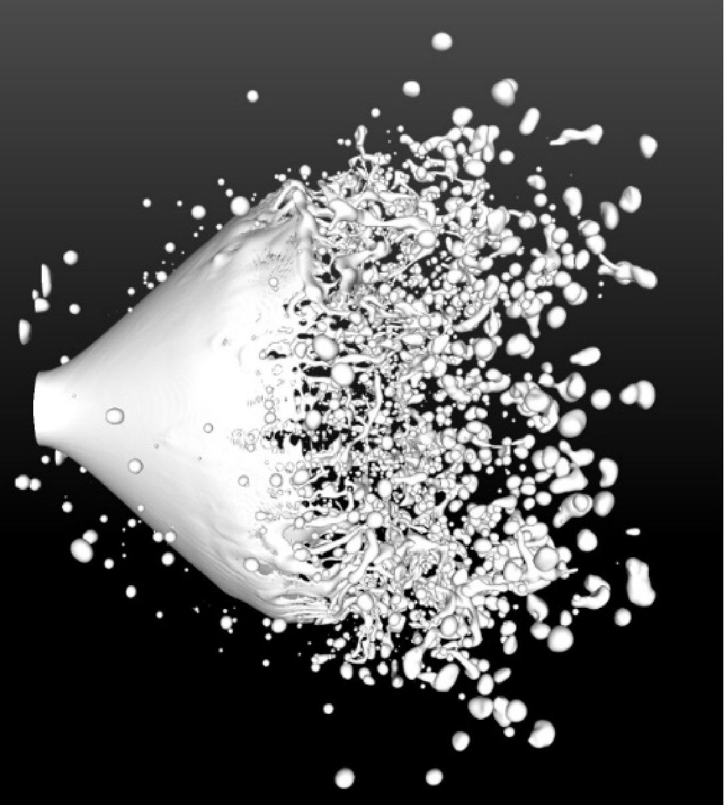

Swirling liquid jet atomization
Detailed numerical simulation of swirling primary atomization of a two-phase annular liquid jet injected into still air using a mass-conservative level set method

Description
This dataset contains detailed numerical simulations of swirling primary atomization of a liquid jet, representative of fuel injection in gas-turbine combustors. A liquid film issues from an annular nozzle with outer diameter D_out = 0.4 mm and inner diameter D_in = 0.2 mm and is injected along the x-direction into surrounding still air; the liquid phase starts as a semi-spherical membrane at the nozzle exit. The bulk azimuthal and axial velocities are both 10 m/s, giving a swirl number S = U_theta / U_x = 1. The liquid-to-gas density ratio is 20 and the dynamic viscosity ratio is 10; the surface tension is 0.036. Based on the outer nozzle diameter and the axial velocity, the configuration corresponds to a Reynolds number of 2000, a Weber number of 222, and an Ohnesorge number of 0.015. The effect of turbulent inflow on atomization is examined against a laminar-inflow baseline. The simulation solves the incompressible two-phase Navier-Stokes equations. The gas-liquid interface is captured by a mass-conservative level set method (the interface is represented as an isosurface of a hyperbolic-tangent profile maintained through re-initialisation), and a ghost-fluid method enforces the jump conditions across the interface; the equations are advanced in time by a projection scheme with CFL = 1. The computational domain is a cube of 10 D_out per side (4 mm) on a structured Cartesian grid, with a velocity inlet at the nozzle, a convective outlet, and periodic boundaries in the transverse y- and z-directions. Turbulent inlet conditions are generated by a precursor simulation of a periodic swirling pipe flow (192 x 64 x 48 cells) with a turbulence intensity of about 20%. Results are reported in dimensionless time T = t U / D. The dataset includes three two-phase cases plus a single-phase reference: a coarse laminar-inflow case on a 512^3 grid (resolution 7.8 um, about 50 points per D_out), a coarse turbulent-inflow case on the same 512^3 grid, and a fine laminar-inflow case on a 1024^3 grid (resolution 3.9 um, about 100 points per D_out). The grid-based Weber numbers are 17.36 for the coarse grids and 8.68 for the fine grid. The simulations ran on the National Supercomputer in Tianjin; Cases 1 and 2 used 448 cores for about 50 hours, and Case 3 used 2048 cores for about 160 hours.
Dataset Access
Cases
| Dataset link | info.json |
|---|---|
| https://www.modelscope.cn | info.json |
| https://www.modelscope.cn | info.json |
| https://www.modelscope.cn | info.json |
Quick Info
- Status: Community dataset
- Paper: Detailed numerical simulation of swirling primary atomization using a mass conservative level set method http://dx.doi.org/10.1016/j.ijmultiphaseflow.2016.10.010
- Contributors: Changxiao Shao, Kun Luo, Yue Yang, Jianren Fan
- Contact: shaochangxiao@hit.edu.cn
- License: CC-BY-4.0
- Dimension: 3
- Grid: case1-2: Nx = 512, Ny = 512, Nz = 512; case3: Nx = 1024, Ny = 1024, Nz = 1024
- Field location: cell-centered
- Format: custom binary
- Size: 5000 GB
- Case conditions: case1: turbulent intensity = 0; case2: turbulent intensity ≈ 20%; case3: turbulent intensity ≈ 20%
- Loading instructions: data format: custom binary